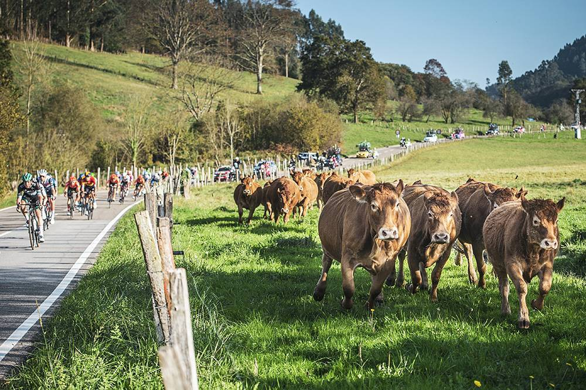
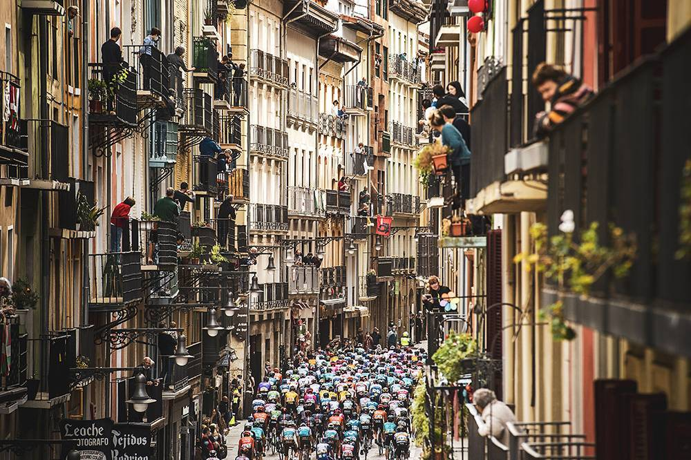

The Vuelta a España (Spanish pronunciation: [ˈbwelta a esˈpaɲa]; English: Tour of Spain) is an annual multi-stage bicycle race primarily held in Spain, while also occasionally making passes through nearby countries. Inspired by the success of the Giro d'Italia and the Tour de France, the race was first organized in 1935.[1] The race was prevented from being run by the Spanish Civil War and World War II in the early years of its existence; however, the race has been held annually since 1955.[1] As the Vuelta gained prestige and popularity the race was lengthened and its reach began to extend all around the globe. Since 1979, the event has been staged and managed by Unipublic, until in 2014, when Amaury Sport Organisation acquired control, with both working together. The peloton expanded from a primarily Spanish participation to include riders from all over the world. The Vuelta is a UCI World Tour event, which means that the teams that compete in the race are mostly UCI WorldTeams, with the exception of the wild card teams that the organizers can invite.[2][3]
Along with the Tour de France and Giro d'Italia, the Vuelta makes up cycling's prestigious, three-week-long Grand Tours.[4] While the route changes each year, the format of the race stays the same with the appearance of at least two time trials, the passage through the mountain chain of the Pyrenees, and the finish in the Spanish capital Madrid. The modern editions of the Vuelta a España consist of 21 day-long stages over a 23-day period that includes 2 rest days.
All of the stages are timed to the finish, after finishing the riders' times are compounded with their previous stage times. The rider with the lowest aggregate time is the leader of the race and gets to don the red jersey. While the general classification garners the most attention there are other contests held within the Vuelta: the points classification for the sprinters, the mountains classification for the climbers, combination classification for the all-round riders, and the team classification for the competing teams.
